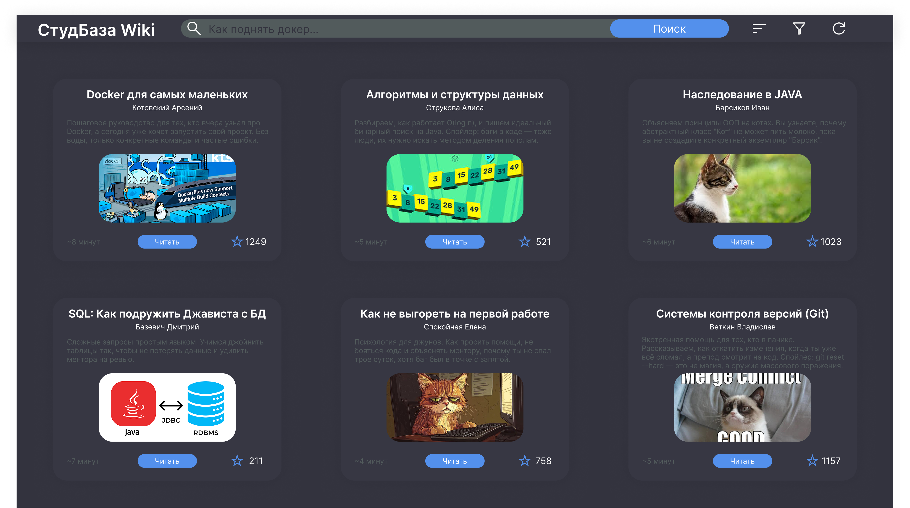

Чистый и не перегруженный дизайн, снижающий нагрузку на глаза при долгом чтении статей.
Удобная навигация с визуальными превью, тегами и примерным временем на чтение материала.
Система лайков (звезд), которая сразу показывает ценность и актуальность контента.